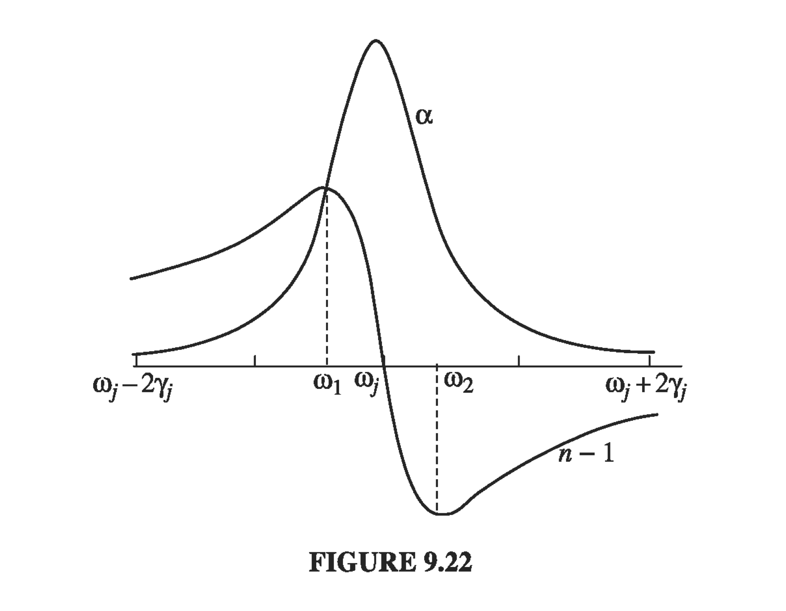

9.4 Absorption and Dispersion#
9.4.1 Electromagnetic Waves in Conductors#
When we formulated our description of how electromagnetic waves move through linear media, we relied on the stipulation that the free charge density \( \rho_f \) and free current density \( \vec J _f \) were zero. In the case of conductors, we’re going to need to re-visit that assumption.
As a refresher, when we last took a good look at conductors we had just moved beyond the electrostatic picture. In statics, we could assume that the field within a conductor is always zero, because any field would eventually (quickly) cause the free changes to arrange in such a way as to cancel the field. Now, we want to see how the conductor responds when we have a varying electric field.
So, what do we already know about electric fields in matter?
We see differential equations like this all the time - it’s the equation for an exponential decay. The decay timescale of the free charge density is
Applying to the situation of a very good conductor where \( \sigma \) is very large, e.g. copper, the time constant is around \( 10^{-19} \) seconds. This means that if a little bit of free charge has accumulated at any time, then from that point charge will flow to suppress that field on the timescale of \( 10^{-19} \) seconds. So, for the vast majority of radiation (wave period up to \( \approx 10^{-18} \)), the time constant is fast enough that the conductor is effectively impermeable, and all our previous descriptions of conductors are still sound. Namely, the Maxwell equations look like
As before, to get our wave equations, apply \( \nabla \times (\nabla \times \vec E) \) and \( \nabla \times (\nabla \times \vec B) \)
As \( \sigma \rightarrow 0 \), we recover the wave equation for linear media as we’d expect. We now have a “lossy” wave equation, since there is attenuation of the wave over time.
From \( \nabla \times ( \nabla \times \vec B) \) we get
Recall that for \( \sigma = 0 \) the wave equation supports waves of the form \( e ^{i(\vec k \cdot \vec r - \omega t)} \). For propagation along the z-axis, \( e^{i(kz - \omega t)} \). To solve the lossy version, we’ll look for solutions by introducing an imaginary component to \( k \) in order to satisfy the damping term.
For the one-dimensional case, let’s plug our new wave solution in
We just write down the solution to the quadratic equation in \( \kappa \)
Because we enforce that \( \kappa \) is real, and all of the parameters within the square root are positive, we need to choose the \( + \) sign
Plugging \( \kappa \) back in to our expression for \( k \) and doing some algebraic manipulation,
So the fields look like
As a check, if \( \sigma \rightarrow 0 \), \( \kappa \rightarrow 0 \), \( k \rightarrow \omega \sqrt{ \frac{\epsilon \mu}{2}} \sqrt{2} = \omega \sqrt{ \epsilon \mu} = \omega / v \) and we are back to the linear medium we started with. In the case of a really good conductor (where \(1 / \omega \gg \epsilon / \sigma \)), both \( k \) and \( \kappa \) will converge
For a good conductor, both \( \vec E \) and \( \vec B \) get damped over a distance scale given by \( 1/\kappa \), which can be quite short. Since \( k ~ \kappa \) we can relate this “skin depth” to the wavelength
Before, we had a real proportionality factor between \( \vec{E_0} \) and \( \vec{B_0} \). If we go through the same motions here with our new lossy solution,
Because \( \tilde{k} \) is a complex number, this ratio will also be a complex number. For our phasor expressions for the fields, this amounts to a phase shift between the two.
!!! info “In conductors, there is a phase difference between the \( \vec E \) and \( \vec B \) fields. For a good conductor, the phase shift is \( 45 ^\circ \)“
9.4.2: Reflection at a Conducting Surface#
In this situation, we consider a wave traveling through a linear medium (or vacuum) impinging on a conducting surface at a normal to the surface. We can go ahead and write down the general boundary conditions:
For a conductor obeying Ohm’s law \( \vec{J_f} = \sigma \vec E \). So, since \( \vec E \) is finite, we will have a finite \( \vec{J}_f \), so we have \( \vec{k}_f \) must go to zero, which takes care of the right hand side of equation (iv). Since we know that \( \vec{E} \) and \( \vec{B} \) are transverse to the wave,
Putting all of these together, we have the boundary conditions for a conducting-linear interface:
For an incident wave that looks like \( \tilde{\vec{E}}_I = \tilde{E}_{0, I} e^{i (k_1 z - \omega t)} \hat x \) and \( \tilde{\vec{B_I}} = \frac{k_1}{\omega} \tilde{E}_{0,I} e^{i (k_1 z - \omega t)} \hat y \), we will have:
a reflected wave
and a transmitted wave
Apply boundary condition at \( z = 0 \) and set the time phase factors equal to each other (as they must be)
Manipulating these together,
For a good conductor (where \( \sigma / \epsilon \omega \gg 1 \)), \( \tilde{\beta} \) will approach
For \( \sigma \rightarrow \infty \) (a perfect conductor),
Which is to say, a perfect conductor is a perfect reflector with a \( 180^\circ \) phase change at the interface. The obvious applications are silvered mirrors and fully metal mirrors.
9.4.3: The Frequency Dependence of Permittivity#
For electromagnetic radiation, dispersion is a measure of the frequency response of a propagating wave on the permittivity, permeability, and conductivity of the medium it is propagating through.
The majority of radiation that we interact with is not monochromatic, and every real radiation source has some non-zero linewidth. The spectrum of frequencies contained in the radiation will broaden and “disperse” depending on the dispersion relation of the material the wave propagates through. This makes it very important to consider the dispersion properties of whatever material a wave is propagating through, no matter what the source is.
As usual, we’ll start with the simplest case: the linear relation
Actually, many real media are have very nearly a linear dispersion relationship. Since the wave velocity depends on \( \epsilon \) and \( \mu \), we now have a velocity which is a function of frequency. In general, there are two velocities that we care about: the wave/phase velocity \( v = \omega / k \) and the group velocity \( v_g = \dv{\omega}{k} \). We can think of the phase velocity as the velocity at which each individual sinusoidal component of a wave packet travels, while the group velocity defines the speed of the overall packet/envelope.
What gives rise to the real relationship? Well, as a wave propagates through some medium, the atoms that make up the medium will have their own resonances depending on their state. In general, any mildly complex medium will have many many resonances, and the shape of the permittivity curve will be defined by the full composition of all of the resonances and can be quite complicated.
Because the mass of the electron is so much smaller than the mass of the nucleus, the electron responds as if it were tied to a central potential like a spring with damping.
where \( \gamma \) is a damping term. There are many potential mechanisms by which the system can lose energy, and we lump them all together into the simple damping term.
Setting up shop back in our phasor space,
Plugging in the form for \( \tilde{x} \) we know we’re going to get (a response with the same frequency as the driving field)
What’s the dipole moment of the system of the electron moving up and down with the wave? We will see that the dipole moment can be connected to the permittivity of the system through the polarization, and from there we’ll get our dispersion relation.
If we assume we have N molecules per unit volume and multiple resonances \( j : \omega_j, \gamma _j \), and oscillator “strength” \( f_j \) (where we lump together the oscillation response of the resonance), the polarization P is
Recall the relation between polarization and susceptibility
And we defined the relative permittivity
So that’s how the electron response to a wave can be connected with the index of refraction, but we’ve got a complex permittivity & dielectric constant. What does the generalized wave equation tell us about how this changes our solutions?
Again, insert a plane wave solution
and
When \( n^2 - 1 \) is small compared to 1, then we can expand \( n \) as
“\( n^2 - 1 \) is small compared to 1” just means the larger term on the RHS is small compared to 1, and this is true for many gaseous systems resulting in an index of refraction close to 1. We often compare the frequency response to the so-called absorption coefficient \( \alpha = 2 \kappa \), because the intensity is proportional to \( E^2 \) which goes as \( e^{-2 \kappa z} \) so the characteristic width of the distribution is \( 2 \kappa \). For gases (diffuse media),
